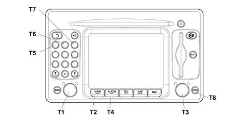

5580PA CHECK OPERATION OF CONNECT RADIO MODULE
- Path
- Test > 55 ELECTRICAL EQUIPMENT > 5580 SPECIAL ACCESSORIES > 5580P CONNECT PANEL > 5580PA CHECK OPERATION OF CONNECT RADIO MODULE
- Kind
- test / check procedure
- Applies to
- engines: 2.0 16V; all production periods
- Interactive page
- https://sloeber94.github.io/elrnDB-fDct/en/#/244000588
Applies to: engines: 2.0 16V; all production periods

Foreword.
Even if the Connect radio function is faulty, treat the radio as if it is working (tuned to a radio station with audible sound).
Proceed as follows to gain access to internal diagnostics:
- accendere il Connect, premendo il tasto/manopola sinistro (T1).
- sullo schermo in ambiente AUDIO non deve comparire la scritta AUDIO OFF.
- premere il tasto MAIN (T2)
- premere il tasto/manopola destro (T3) per visualizzare il menù principale
- premere il tasto AUDIO (T4) per alcuni secondi finché appare la scritta "AUDIO OFF"
- inserire la password di assistenza premendo in sequenza i tasti numerati 1-2-3 (T5, T6, T7)
- premere il tasto/manopola destro (T3) per conferma
This will provide acess to the Service menu:
- utilizzare il tasto/manopola (T3) per spostarsi con il cursore sino ad attivare l'ambiente "Assistenza"
- confermare premendo il tasto/manopola destro (T3)
Begin browsing in Service mode. When in the first screen check that the broadcasting specifications of the geographical area correspond. Otherwise turn knob (T3) to select RADIO, press the knob to go into the mode where the correct geographical area can be selected.
Turn knob (T3) to select the EOL Diagnostics menu and press the key to confirm the choice
The EOL Diagnostics menu consists of:
- N° Disegno FIAT
- Luci
- Retromarcia
- Odometro esterno
- Casse: nell'area viene indicato lo stato del collegamento fisico con tutti gli altoparlanti, e viene indicato con un cambiamento di colore. L'area in verde indica che non sono riscontrate anomalie, mentre in colore rosso indica presenza di problemi.
- Antenna GPS
- Antenna AM/FM: indica lo stato del collegamento fisico dell'antenna AM/FM (assorbimento elettrico dell'amplificatore d'antenna). In un'area vicina viene indicato con il colore verde che non sono riscontrate anomalie, mentre il colore rosso indica presenza di problemi.
- Errore interno: fornisce informazioni sullo stato degli errori interni al sistema viene indicato in un'area vicina che cambia colore: dove il colore verde indica errore assente, mentre il colore rosso indica errore presente.
Turn knob (T3) to select Diagnostics mode and press the knob to confirm the choice. Further submenus can be selected within this menu to continue self-diagnosis:
- GSM
- Radio
- GPS
- Input
- Navigazione
- Diagnosi Status/Data
Menu: Service/Diagnostics/Radio
The radio submenu displays:
- il numero della versione software del modulo Radio
- lo stato dell'antenna, in un'area vicina il colore verde indica che non ci sono anomalie riscontrate, mentre il colore rosso indica presenza di problemi.
- casse, in un'area vicina il colore verde indica che non ci sono anomalie riscontrate, mentre il colore rosso indica presenza di problemi.
- comunicazione: indica il dialogo tra il modulo Radio è l'unità centrale interna del Connect. in un'area vicina il colore verde indica che non ci sono anomalie, mentre il colore rosso indica presenza di problemi
- presenza o assenza del CD-Changer
- cd interno, in un'area vicina il colore verde indica che non ci sono anomalie riscontrate, mentre il colore rosso indica presenza di problemi.
- presenza o assenza dell'impianto di amplificazione/equalizzazione
Menu: Service/Diagnostics/Status/Date diagnostics
The Status/Date Diagnostics menu consists of:
- Dati EEPROM
- Identification option
- DTC
EEPROM Data Submenu
The EEPROM data submenu displays:
- Codice Errore Interno: il valore HEX indica il codice identificativo dell'errore interno attivo
- Cod. Configurazione: Il valore HEX, convertito in binario indica lo stato di configurazione del sistema
- N.ro sovratemperature: Indica il valore del contatore di sovratemperatura Nel modulo SW di diagnosi
- N.ro Key_on da sovrat. Indica il numero di chiave su marcia dall'ultimo evento di sovratemperatura
DTC Submenu
The DTC screen displays (by changing the background colour from Red = error present to Green = error absent) the number of temperature surge errors and the temperature value of the following parts:
- Antenna AM/FM: fornisce informazioni sullo stato del collegamento dell'antenna AM/FM il comportamento dei campi (colori e numeri) è uguale a quanto descritto per le casse acustiche.
- Errore interno: fornisce informazioni sullo stato degli errori interni al sistema il comportamento dei campi (colori e numeri) è uguale a quanto descritto per le casse acustiche.
- Tasto CLEAR ERROR MEMORY Questa funzione è attiva con chiave su marcia, premendo la manopola (T3) cambia l'immagine a video e premendo ESC (T8) si annullerà l'operazione, mentre premendo nuovamente la manopola (T3), permetterà di attivare la procedura di cancellazione della memoria errori. Per alcuni tipi di errori la cancellazione della memoria avviene dopo la fase di chiave su stop/chiave su marcia. Gli errori ancora presenti saranno effettivamente presenti in quell'istante.
- Cassa Anteriore SX (Altoparlante Anteriore SX)
- Cassa Anteriore DX (Altoparlante Anteriore DX)
- Cassa Posteriore SX (Altoparlante Posteriore SX)
- Cassa Posteriore SX (Altoparlante Posteriore SX)
The speaker field provides information on the status of each individual connected speaker. This is expressed as a two-figure number (shown to the left of the field) corresponding to the number of problems detected. The count decreases from 64 (the counter is initialised at 64, i.e. 64 indicates zero errors, 60 indicates 4 errors).
The speaker field shows a number (appearing to the left of the field) that indicates the temperature value when the last error occurred.